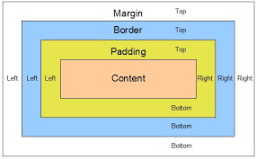

CSS FAQ
Чим margin відрізняється від padding?
marginце зовнішній відступ елементу по відношенню до інших елементів на сторінці,paddingце внутрішній відступ всередині цього елементу
Дельніше можна прочитати за посиланням
Яка різниця між значеннями absolute і relative властивості position?
Значенняabsoluteвпливає на розміщення елемента та несе зміни в макеті навколо цього елемента, у випадку зrelativeзмін в макеті довкола елемента немає
Я звичайний блок з
position: static як і у всіх блоків за
замовчуванням.
Я його елемент
вищого рівня --->
вищого рівня --->
Я блок з
position: absolute; left: 200px; bottom: 10px;. Я
не
впливаю
на оточуючі блоки, та зміщуюся відносно елементу вищого рівня на відстані, вказані за допомогою
властивостей
left, right, top, bottom. Елемент вищого рівня має отримати властивість
position: relative, інакше я буду позиціонуватися відносно всієї сторінки взагалі.
Я блок з
position: relative; right: 50px; top: 20px;. Я
впливаю
на оточуючі блоки, та зміщуюся відносно своєї позиції на відстані, вказані за допомогою властивостей
left, right, top, bottom.
Дельніше можна прочитати за посиланням
Приклади з пріорітетами (по підключенню стилів / класами, id, тегами)
Створений клас можна застосовувати до будь-яких елементів веб-сторінки. Ви можете надавати стиль не тільки цілим заголовкам і абзацам, а й окремим фрагментам сторінки, наприклад, словам.
ID - це унікальна назва елемента на веб-сторінці, яке повинно зустрічатися на ній тільки один раз.
Дельніше можна прочитати за посиланням